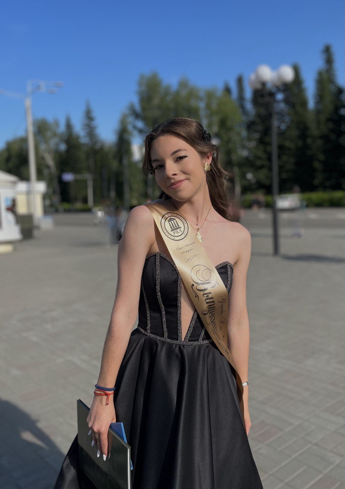
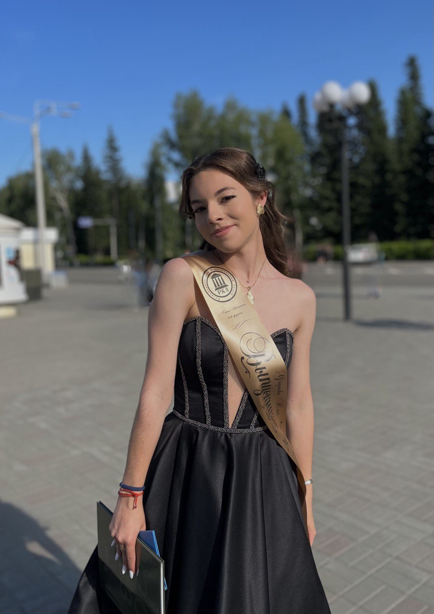

Приветствую всех читателей на моей маленькой страничке про мои достижения в художественной гимнастике!
Давайте перед этим познакомимся! Меня зовут Федотова Юлия. Я обучаюсь в Новосибирском Государственном Техническом Университете. Данная страница создана для отслеживания моих достижений в спорте (а также для получения дополнительного балла за лабу, хехеехех). С раннего детства я занимаюсь спортом: в три года папа поставил меня на горные лыжи, а мама отдала на гимнастику...
 

В детстве моя двоюродная сестра Вика была полненькой, и тетя Лена (Викина мама) решает отправить её на художественную гимнастику. А меня отдали в гимнастику за компанию... Чтобы Вике скучно не было. Нам с Викой было по 3 годика. Вот так и началась история, длиною в 14 лет...
Конечно всех историй рассказать я не смогу, но некоторыми поделюсь)
Кстати, на фотке ниже мои первые соревнования. На них я заняла первое место! Этот купальник мама сшила сама.

На самом деле не все так радужно и красиво, как на картинках. Сколько было слез, сколько раз я говорила маме, что больше не хочу ходить на чертову гимнастику... Когда Вика ревела и не хотела идти на гимнастику, её мама держала дверь в зале с другой стороны, чтобы она не убежала с тренировки, аахаххаха.
Моим первым тренером была Ольга Александровна. Очень люблю этого тренера. Отдельное ей спасибо за терпение, её любовь к нам и к своему делу. К сожалению, ей пришлось переехать в другой город со своим мужем. Честно говоря, не знаю где она сейчас. Ольгу Александровну сменил другой тренер - Наталья Сергеевна Грохотова. Вот отсюда начинается весь ужас... Не думайте, что всё плохо, просто у Натальи Сергеевны свои методы воспитания.
МИНИ ФАКТ: моего первого и последнего тренера звали Ольга Александровна, жалко, фамилии разные. Было бы забавно.